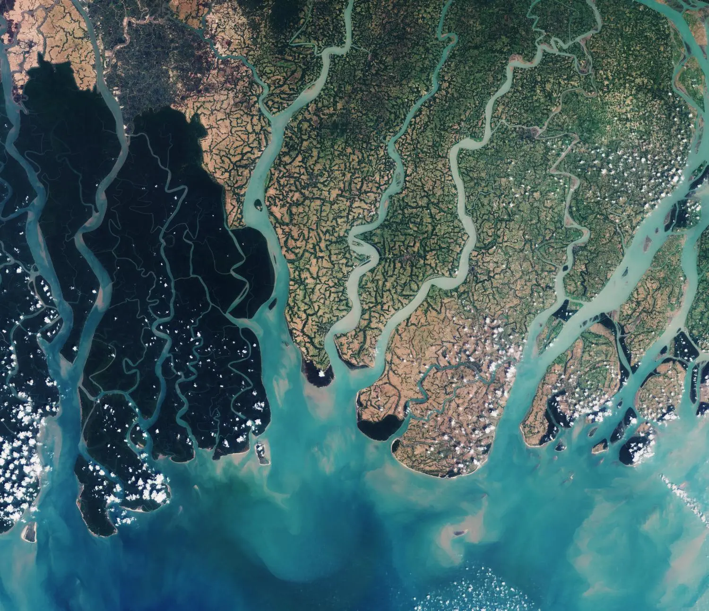

M0NARQ
The 'Rosetta Stone' journey from a flawed 98% accuracy to a defensible edge.
Demonstrations of our core engines, Hyperion and HawkEYE, showcasing the power and versatility of the Kalopathor Decision OS.
The 'Rosetta Stone' journey from a flawed 98% accuracy to a defensible edge.
Fusing multi-modal data for critical disaster response with zero false positives.
Automated discovery of crop stress using Self-Supervised Learning.
The grand synthesis: forecasting disease and nowcasting GDP.
A comprehensive platform for decision intelligence, combining predictive analytics, geospatial intelligence, and causal inference.
Read the Primer